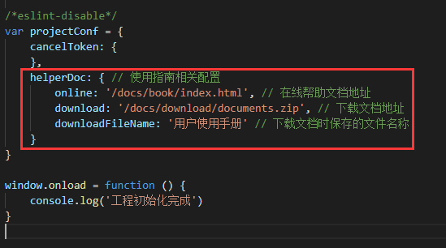
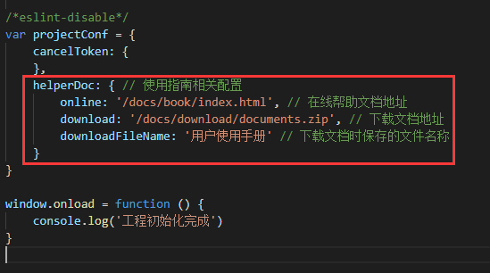

使用指南配置说明
使用指南文件夹结构
使用指南一般由产品经理提供，存放于docs文件夹下，包含2个文件夹
- book文件夹存放在线文档，建议用gitbook生成
- download文件夹存放供用户下载的使用手册
使用指南自定义配置
在全局配置文件src/project-conf.ts中有使用指南相关的配置项，可以根据实际情况进行修改 
使用指南一般由产品经理提供，存放于docs文件夹下，包含2个文件夹
在全局配置文件src/project-conf.ts中有使用指南相关的配置项，可以根据实际情况进行修改 